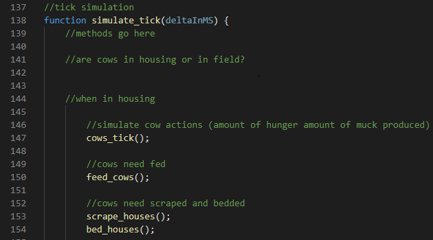
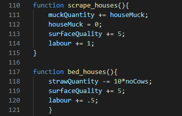

In this example we will be using javascript in order to create the program, however the basic principles may be easily
transferred to a different language if so required. The simulation should be programmed using only procedural programming
techniques. Although this may seem odd, this makes the program much more accessible and adaptable to different farms as
you will see later.
There are four key areas of any simulation that will need to be addressed, these are:
You must decide what you want the simulation to be used to acheive.
Here we will go through a general format for how to begin to approach the programming
There's no point having a perfect simulation that can only ever be applied to one small problem.
A simulation which predicts results which are entirely wrong is of no use to anyone!
In order to form any form of simulation you must first identify your specific primary goals. These can vary massively
for any farming simulation. In order to determine these goals you must know the type of farm you are aiming to
simulate. This is because, factors that may be beneficial to a beef farm will be completely differrent to the factors
which are beneficial to an arable farm.
In this example we will be looking to simulate a beef farm. Therefore there are some basic goals to consider.
Important Variables - There are three types of variables that you should consider; constants, probability
and variables which hold data relating to the farm. Most of these variables are usually stored within a json file
However some, e.g. many probability variables, will be stored within the main document as they are universal across
all applications of the simulator
Use of the Simulation - The intended use of the simulation is very important in order to have a clear direction
in which you wish to take the project. For example, one use may be to ensure the farm maximises profit. This will then
result in different conditions being focused on compared to if you wanted your simulation to help minimise the
environmental impact of the farm. In this example we will be taking profitability as the main factor.
Simulation of Cows - in order to make the simulation worthwhile the cows on the beef farm in question should each be represented individually. This is in order to have a realistic approach to the simulation as not all animals will respond the same to the same circumstances. This is where the json comes in.
Once you have decided upon your primary goals for the simulation you should begin to map out all the important events that may occur within a day and map them out. It's important to have a rough idea of the events which will most impact your simulation in order to ensure they are included. Then further down the line events which will will have a smaller impact can be added when accuracy needs to be improved.
When programming the simulation everything will occur within a 'tick'. In this example each tick will represent the passing of a day. Therefore all of the events that may occur within a day should have the possibility of occuring within every tick. All of these actions are included within a loop in the main program, the loop continues to tick in order to simulate the passing of time. The loop can be iterated more or less times in order to pass more or less time.
As shown in the image above, rather than the code for every event being put into a loop functions declared outside the loop should be called within the loop. This prevents the code from becoming unreadable but also aids the functionality of the code as some events may occur twice within a day and then the function may just be called again rather than the entire chunk of code be re-written.
Above shows some basic examples of functions which are declared outside the loop. These functions perform simple arithmetic calculations in order to change variables associated with the farm to simulate what would change on the farm if that action were performed during the day.
In order to make the simulation different for every farm you wish to simulate a json file may be used. This file will contain all of the
variables assoicated with the farm. E.g. cows
One way to keep track of cows individually within a farm without making them objects (as mentioned above we want to program procedurally)
is to have a dictionary within the json file for every cow, these dictionaries will keep track of the same variables associated with a cow
but may be changed independantly from all other cows.
The json file can be used to create a data.js file which may be loaded at the same time as the main .js file is being loaded. this allows for all of the variables within the json to be accessed by the main application. This is the powerful feature of javascript that allows the simulation to be so easily flexible as, if a new json is provided, all the details of a farm will automatically be imported.
The initial values used to calculate the profitability of the farm within the simulation aren't particularly important. In order to make the simulation of the program as accurate as possible, human set variables are always going to be too inacurate. Therefore, an optimisation program can be used to optimise the variables to give the most accurate results. This is done by having a set of variables recorded in a real life situation and the outcome of these variables is recorded. An optimisation program can then take the initial values and constantly tweak the variables within the program until it can acheive the same results as were produced in real life. After this process the simulation should be accurate as it can reproduce events that occured within real life. The process can be repeated a few times with different events in order to ensure maximum accuracy. The github repository for one such open source optimisation program is linked below.